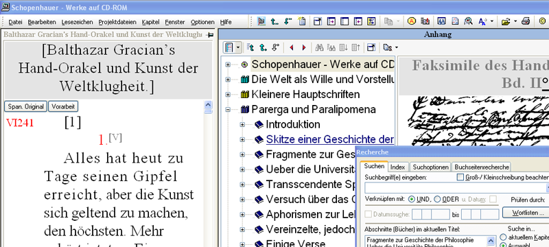
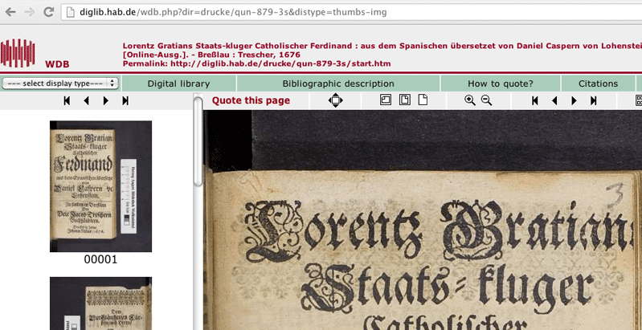
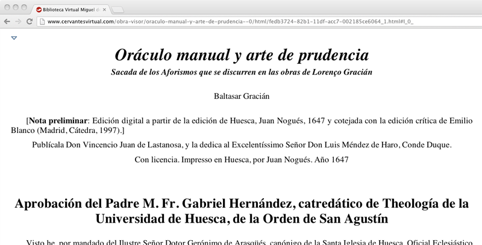
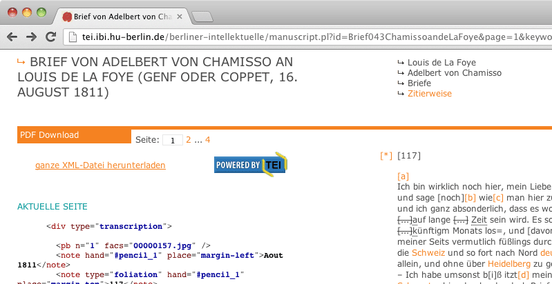
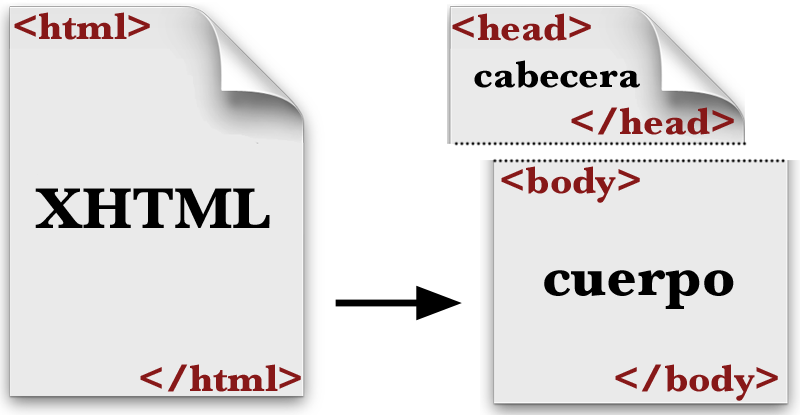
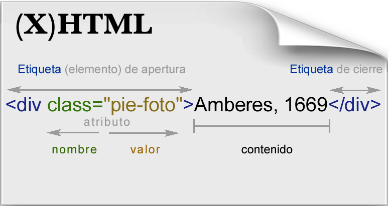
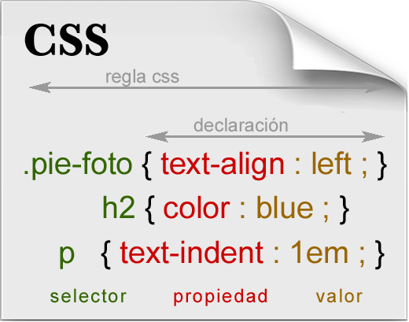
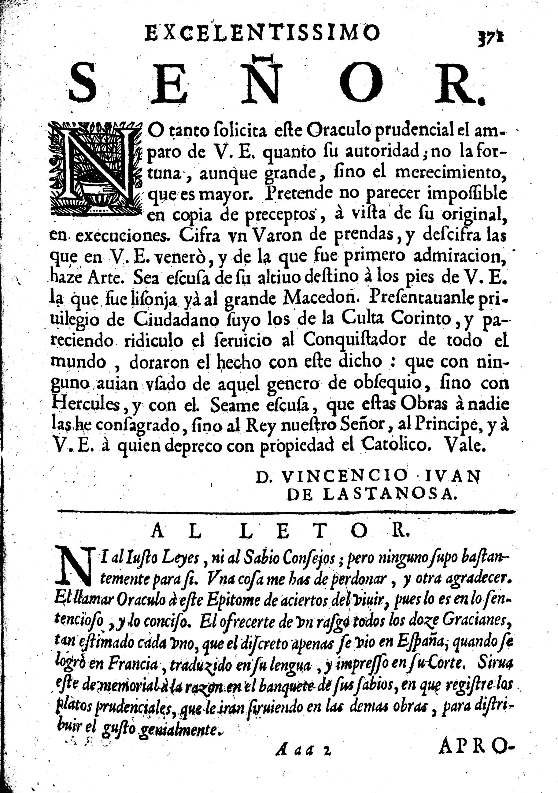
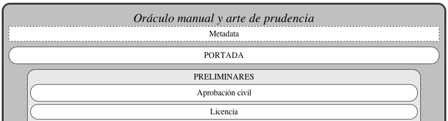

Edición digital (ePub)
❧
Oráculo manual y
arte de prudencia
Índice
- Portada(1)
- Contenidos(1)
- Ediciones digitales↡(7)
- Archivo: ePub↡(3)
- Marcado: xhtml ↡(4)
- Formato: css ↡(4)
- Estructura de la obra↡(2)
- Editores de ePub↡(3)
- Creación en Sigil(1)
- Créditos(1)
Contenidos
multimedia
facsímil + metadata
Transcripción (html)
Codificación (xml-TEI)
formatos portátiles: .ePub, .pdf, .mobi, .azw,...
Edición digital
ePub
Estructura del ePub
- Esquema y elementos (.opf, mimetype,...)
- Índice de contenidos (toc.ncx)
- Texto (.xml, .xhtml)
- Estilos (.css)
- Fuentes tipográficas (.ttf, .otf)
- Imágenes (.jpg, .png, .gif, .svg)
Lenguaje de marcado
Etiquetas (elementos)
(X)HTML
<!DOCTYPE html PUBLIC "-//W3C//DTD XHTML 1.1//EN" "xhtml11.dtd">
<html>
<head>
<meta http-equiv="Content-Type" content="text/html; charset=utf-8" />
<title>Oráculo manual</title>
</head>
<body>
<h1 class="encabezado"> Al lector </h1>
<div class="cuerpo">
<p class="capital"> Ni al justo leyes, ni al sabio consejos; pero ninguno supo bastantemente para sí. Una cosa me has de perdonar y otra agradecer: el llamar Oráculo a este epítome de aciertos del vivir, pues lo es en lo sentencioso y lo conciso; el ofrecerte de un rasgo todos los doce Gracianes, tan estimado cada uno, que <i>El Discreto</i> apenas se vio en España cuando se logró en Francia, traducido en su lengua e impreso en su Corte. Sirva éste de memorial a la razón en el banquete de sus sabios, en que registre los platos prudenciales que se le irán sirviendo en las demás obras para distribuir el gusto genialmente.</p>
</div>
</body>
</html>
Ni al justo leyes, ni al sabio consejos; pero ninguno supo bastantemente para sí. Una cosa me has de perdonar y otra agradecer: el llamar Oráculo a este epítome de aciertos del vivir, pues lo es en lo sentencioso y lo conciso; el ofrecerte de un rasgo todos los doce Gracianes, tan estimado cada uno, que El Discreto apenas se vio en España cuando se logró en Francia, traducido en su lengua e impreso en su Corte. Sirva éste de memorial a la razón en el banquete de sus sabios, en que registre los platos prudenciales que se le irán sirviendo en las demás obras para distribuir el gusto genialmente.
Formato (estilos): css
Hoja de estilo
div.encabezado {
font-family:Georgia, serif; text-align:center; color:#913005;
border-bottom: 1px dotted #913005; margin-bottom: 1em;
font-size: 70%;
}
p.capital:first-letter {
float:left;
margin:0 3px 0 0;
font-size:3.2em;
font-family: Georgia, serif;
line-height:0.6em;
color:#913005;
text-indent:0em;
} /*Se pueden añadir notas para facilitar la lectura del código*/
div.aforismo {
margin-top: 0.3ex; margin-bottom: 0em;
width: 75%;
}
span.marginalia {
display: block; width: 22%; float: right; clear: right;
margin-bottom: 0.5ex; margin-top: 0.5ex; padding-left: 1em;
font-size: 50%; font-style: normal; font-weight: normal;
text-align: center; text-indent: 0;
}
.marginalia img { width: 100%;}
.maxima {font-style: italic;}
(x)html con hoja de estilo
<!DOCTYPE html PUBLIC "-//W3C//DTD XHTML 1.1//EN" "xhtml11.dtd">
<html> <!-- principio del documento html -->
<head> <!-- espacio para la información interna, p. ej., el formato -->
<meta http-equiv="Content-Type" content="text/html; charset=utf-8" />
<title>Oráculo manual</title>
<link href="estilos-OM.css" rel="stylesheet" type="text/css" /> <!-- enlace a la hoja de estilos -->
</head> <!-- fin del espacio para la información interna -->
<body> <!-- espacio de la parte visible del documento. -->
<div class="encabezado"> Oráculo manual y arte de prudencia </div>
<p><span class="marginalia"><img src="imagen/Lector-Amberes-OC.jpg"/><i>OC</i>, Amberes (1669)</span></p>
<div class="aforismo">
<p>1. <span class="maxima">Todo está ya en su punto, y el ser persona en el mayor</span>. Más se requiere hoy para un sabio que antiguamente para siete; y más es menester para tratar con un solo hombre en estos tiempos que con todo un pueblo en los pasados.</p>
</div>
<div class="aforismo">
<p>2. <span class="maxima">Genio y ingenio</span>. Los dos ejes del lucimiento de prendas. El uno sin el otro, felicidad a medias. No basta lo entendido, deséase lo genial: infelicidad de necio, errar la vocación en el estado, empleo, región, familiaridad.</p>
</div>
</body> <!-- Cierre de la parte visible del documento. -->
</html> <!-- Cierre del documento html -->
OC, Amberes (1669)
1. Todo está ya en su punto, y el ser persona en el mayor. Más se requiere hoy para un sabio que antiguamente para siete; y más es menester para tratar con un solo hombre en estos tiempos que con todo un pueblo en los pasados.
2. Genio y ingenio. Los dos ejes del lucimiento de prendas. El uno sin el otro, felicidad a medias. No basta lo entendido, deséase lo genial: infelicidad de necio, errar la vocación en el estado, empleo, región, familiaridad.
Marcado general de la estructura del libro (<div> ... </div>)
Editores de ePub (DTP)
Sigil | Adobe InDesign | QuarkXpress
iBooks Author | Pages | Scrivener
Sigil
\ˈsi-jəl\
- multiplataforma (Windows, Linux & Mac)
- texto (wysiwyg)
- control sobre el código (xhtml, css, xml)
- gratuito
Lectores en el ordenador
Adobe Digital Editions | Calibre
créditos
Presentación realizada con html, css y javascript (proyecto reveal.js) y alojada en editio.github.io/manual
Universidad de Wrocław (Polonia) - 2013